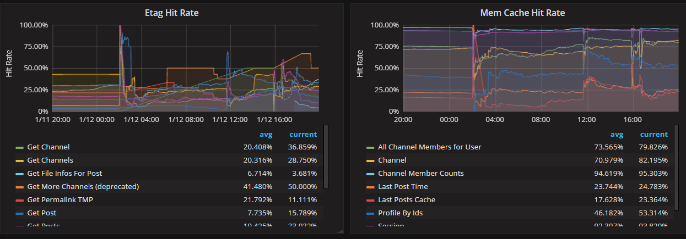

Performance monitoring#
 Available on Enterprise plans
Available on Enterprise plans
 Cloud and self-hosted deployments
Cloud and self-hosted deployments
Available in legacy Mattermost Enterprise Edition E20
Performance monitoring support enables a Mattermost server to track system health for large Enterprise deployments through integrations with Prometheus and Grafana. These integrations support data collection from several Mattermost servers, which is particularly useful if you’re running Mattermost in high availability mode.
Note
While Prometheus and Grafana may be installed on the same server as Mattermost, we recommend installing these integrations on separate servers, and configure Prometheus to pull all metrics from Mattermost and other connected servers.
Install Prometheus#
Download a precompiled binary for Prometheus. Binaries are provided for many popular distributions, including Darwin, Linux, and Windows. For installation instructions, see the Prometheus install guides.
The following settings are recommended in the Prometheus configuration file named
prometheus.yml:
# my global config
global:
scrape_interval: 60s # By default, scrape targets every 15 seconds.
evaluation_interval: 60s # By default, scrape targets every 15 seconds.
# scrape_timeout is set to the global default (10s).
# Attach these labels to any time series or alerts when communicating with
# external systems (federation, remote storage, Alertmanager).
external_labels:
monitor: 'mattermost-monitor'
# Load rules once and periodically evaluate them according to the global 'evaluation_interval'.
rule_files:
# - "first.rules"
# - "second.rules"
# A scrape configuration containing exactly one endpoint to scrape:
# Here it's Prometheus itself.
scrape_configs:
# The job name is added as a label `job=<job_name>` to any timeseries scraped from this config.
- job_name: 'prometheus'
# Override the global default and scrape targets from this job every five seconds.
# scrape_interval: 5s
# metrics_path defaults to '/metrics'
# scheme defaults to 'http'.
static_configs:
- targets: ["<hostname1>:<port>", "<hostname2>:<port>"]
Replace the
<hostname1>:<port>parameter with your Mattermost host IP address and port to scrape the data. It connects to/metricsusing HTTP.In the Mattermost System Console, go to Environment > Performance Monitoring to set Enable Performance Monitoring to true, then specify the Listen Address and select Save. See our Configuration Settings documentation for details.
{kind=link}
To test that the server is running, go to
<ip>:<port>/metrics.
Note
A Mattermost Enterprise license is required to connect to /metrics using HTTP.
Finally, run
vi prometheus.ymlto finish configuring Prometheus. For starting the Prometheus service, read the comprehensive guides provided by Prometheus.Once the service has started, you can access the data in
<localhost>:<port>/graph. While you can use the Prometheus service to create graphs, we’ll focus on creating metric and analytics dashboards in Grafana.
Note
For troubleshooting advice, check the Prometheus FAQ page.
Install Grafana#
Download a precompiled binary for Grafana on Ubuntu or Debian. Binaries are also available for other distributions, including Redhat, Windows and Mac. For install instructions, see Grafana install guides
The Grafana package is installed as a service, so it is easy to start the server. See their install guides to learn more.
The default HTTP port is
3000and default username and password areadmin.Add a Mattermost data source with the following settings as defined in the screenshot below
Note
For troubleshooting advice, check the Grafana Troubleshooting page.
For user guides and tutorials, check the Grafana documentation to learn more.
Getting started#
To help you get started, you can download three sample dashboards shared in Grafana:
Mattermost Performance Monitoring v2, which contains detailed charts for performance monitoring including application, cluster, job server, and system metrics.
Mattermost Collapsed Reply Threads Metrics, which contains detailed metrics on the queries involved in our Collapsed Reply Threads feature.
Mattermost Performance KPI Metrics, which contains key metrics for monitoring performance and system health.
Mattermost Performance Monitoring (Bonus Metrics), which contains additional metrics such as emails sent or files uploaded, which may be important to monitor in some deployments.
See this guide to learn how to import Grafana dashboards either from the UI or from the HTTP API.
Statistics#
Mattermost provides the following performance monitoring statistics to integrate with Prometheus and Grafana.
Custom Mattermost metrics#
The following is a list of custom Mattermost metrics that can be used to monitor your system’s performance:
API metrics#
mattermost_api_time: The total time in seconds to execute a given API handler.
Caching metrics#
mattermost_cache_etag_hit_total: The total number of ETag cache hits for a specific cache.mattermost_cache_etag_miss_total: The total number of ETag cache misses for an API call.mattermost_cache_mem_hit_total: The total number of memory cache hits for a specific cache.mattermost_cache_mem_invalidation_total: The total number of memory cache invalidations for a specific cache.mattermost_cache_mem_miss_total: The total number of cache misses for a specific cache.
The above metrics can be used to calculate ETag and memory cache hit rates over time.
Cluster metrics#
mattermost_cluster_cluster_request_duration_seconds: The total duration in seconds of the inter-node cluster requests.mattermost_cluster_cluster_requests_total: The total number of inter-node requests.mattermost_cluster_event_type_totals: The total number of cluster requests sent for any type.
Database metrics#
mattermost_db_master_connections_total: The total number of connections to the master database.mattermost_db_read_replica_connections_total: The total number of connections to all the read replica databases.mattermost_db_search_replica_connections_total: The total number of connections to all the search replica databases.mattermost_db_store_time: The total time in seconds to execute a given database store method.mattermost_db_replica_lag_abs: Absolute lag time based on binlog distance/transaction queue length.mattermost_db_replica_lag_time: The time taken for the replica to catch up.
Database connection metrics#
max_open_connections: The maximum number of open connections to the database.open_connections: The number of established connections both in use and idle.in_use_connections: The number of connections currently in use.idle_connections: The number of idle connections.wait_count_total: The total number of connections waited for.wait_duration_seconds_total: The total time blocked waiting for a new connection.max_idle_closed_total: The total number of connections closed due to the maximum idle connections being reached.max_idle_time_closed_total: The total number of connections closed due to the connection maximum idle time configured.max_lifetime_closed_total: The total number of connections closed due to the connection maximum lifetime configured.
HTTP metrics#
mattermost_http_errors_total: The total number of http API errors.mattermost_http_request_duration_seconds: The total duration in seconds of the http API requests.mattermost_http_requests_total: The total number of http API requests.
Login and session metrics#
mattermost_http_websockets_totalThe total number of WebSocket connections to the server.mattermost_login_logins_fail_total: The total number of failed logins.mattermost_login_logins_total: The total number of successful logins.
Mattermost channels metrics#
mattermost_post_broadcasts_total: The total number of WebSocket broadcasts sent because a post was created.mattermost_post_emails_sent_total: The total number of emails sent because a post was created.mattermost_post_file_attachments_total: The total number of file attachments created because a post was created.mattermost_post_pushes_sent_total: The total number of mobile push notifications sent because a post was created.mattermost_post_total: The total number of posts created.mattermost_post_webhooks_totals: The total number of webhook posts created.
Process metrics#
mattermost_process_cpu_seconds_total: Total user and system CPU time spent in seconds.mattermost_process_max_fds: Maximum number of open file descriptors.mattermost_process_open_fds: Number of open file descriptors.mattermost_process_resident_memory_bytes: Resident memory size in bytes.mattermost_process_start_time_seconds: Start time of the process since unix epoch in seconds.mattermost_process_virtual_memory_bytes: Virtual memory size in bytes.
Search metrics#
mattermost_search_posts_searches_duration_seconds_sum: The total duration, in seconds, of search query requests.mattermost_search_posts_searches_duration_seconds_count: The total number of search query requests.
WebSocket metrics#
mattermost_websocket_broadcasts_total: The total number of WebSocket broadcasts sent by type.mattermost_websocket_event_total: The total number of WebSocket events sent by type.
Logging metrics#
logger_queue_used: Current logging queue level(s).logger_logged_total: The total number of logging records emitted.logger_error_total: The total number of logging errors.logger_dropped_total: The total number of logging records dropped.logger_blocked_total: The total number of logging records blocked.
Debugging metrics#
mattermost_system_server_start_time: Server start time. Set to the current time on server start.mattermost_jobs_active: Increment when a job starts and decrement when the job ends.
Use mattermost_system_server_start_time to dynamically add an annotation corresponding to the event.

Use mattermost_jobs_active to display an active jobs chart.
Or, use mattermost_jobs_active to dynamically add a range annotation corresponding to jobs being active.
Use annotations to streamline analysis when a job is long running, such as an LDAP synchronization job.
Note
Jobs where the runtime is less than the Prometheus polling interval are unlikely to be visible because Grafana is performing range queries over the raw Prometheus timeseries data, and rendering an event each time the value changes.
Standard Go metrics#
The performance monitoring feature provides standard Go metrics for HTTP server runtime profiling data and system monitoring, such as:
go_memstats_alloc_bytesfor memory usagego_goroutinesfor number of goroutinesgo_gc_duration_secondsfor garbage collection durationgo_memstats_heap_objectsfor object tracking on the heap
Note
Profile reports are available to Team Edition and Enterprise Edition users.
To learn how to set up runtime profiling, see the pprof package Go documentation. You can also visit the ip:port page for a complete list of metrics with descriptions.
Note
A Mattermost Enterprise license is required to connect to /metrics using HTTP.
If enabled, you can run the profiler by
go tool pprof http://localhost:<port>/debug/pprof/profile
where you can replace localhost with the server name. The profiling reports are available at <ip>:<port>, which include:
/debug/pprof/profilefor CPU profiling/debug/pprof/cmdline/for command line profiling/debug/pprof/symbol/for symbol profiling/debug/pprof/goroutine/for GO routine profiling/debug/pprof/heap/for heap profiling/debug/pprof/threadcreate/for threads profiling/debug/pprof/block/for block profiling
Frequently asked questions#
Why are chart labels difficult to distinguish?#
The chart labels used in server filters and legends are based on the hostname of your machines. If the hostnames are similar, then it will be difficult to distinguish the labels.
You can either set more descriptive hostnames for your machines or change the display name with a relabel_config in Prometheus configuration.